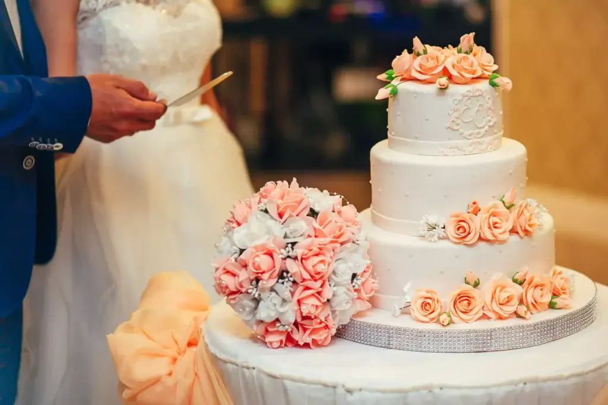
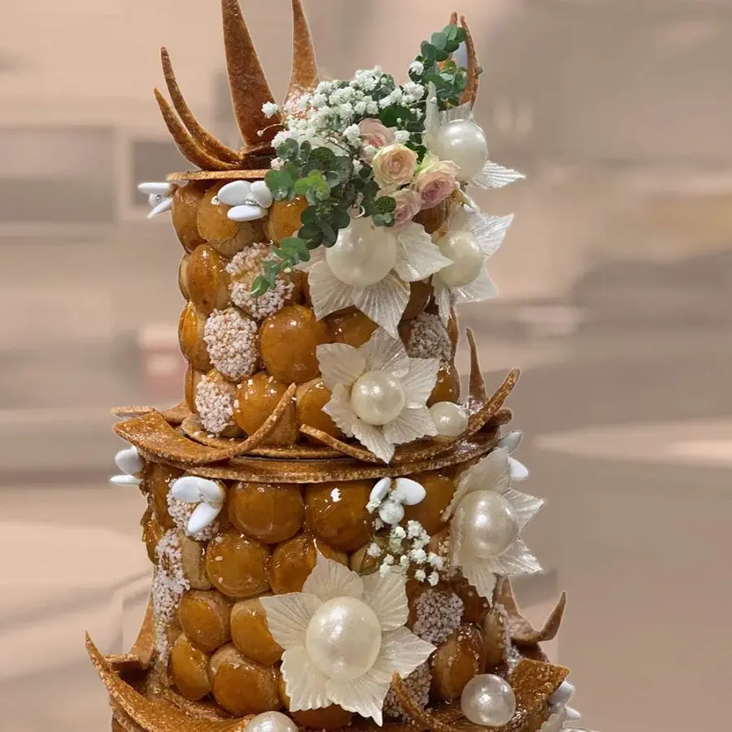
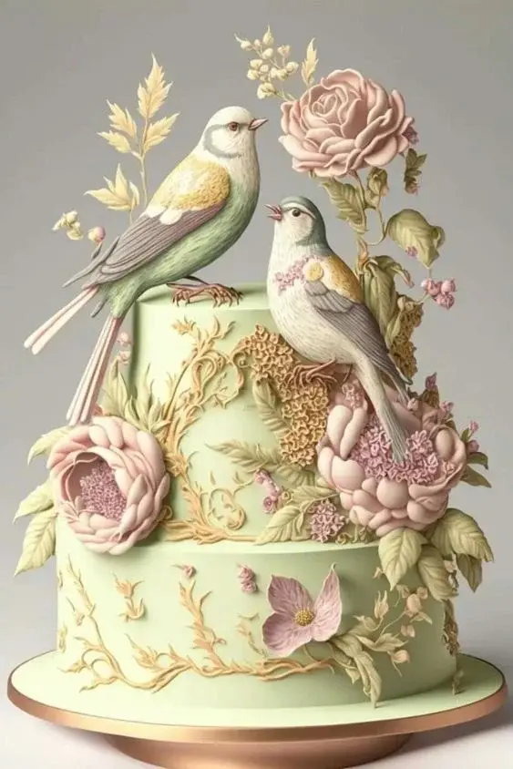
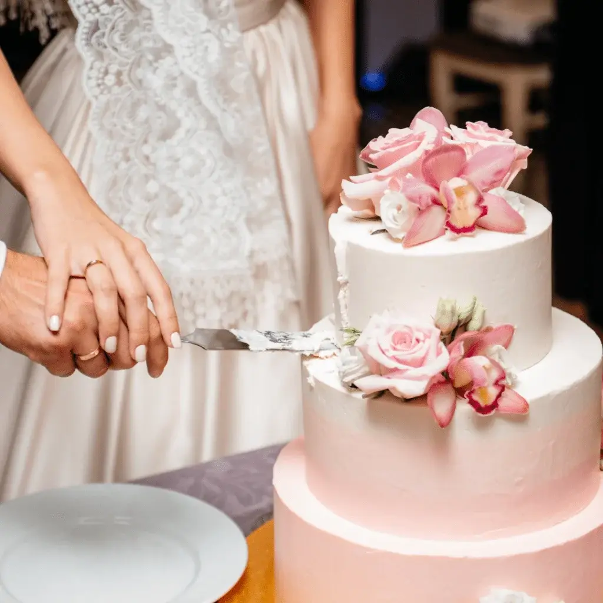
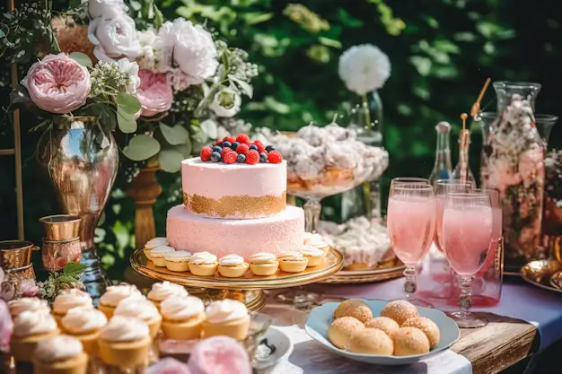
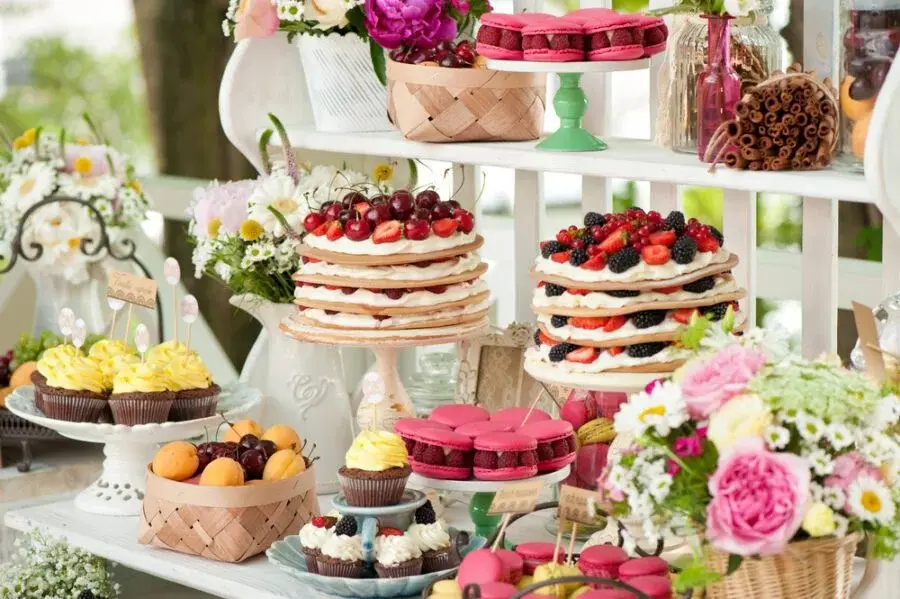
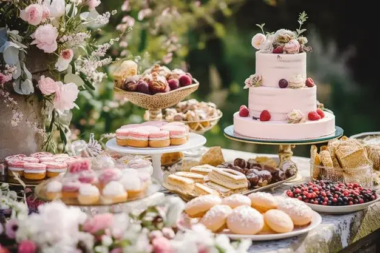
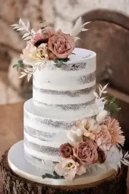
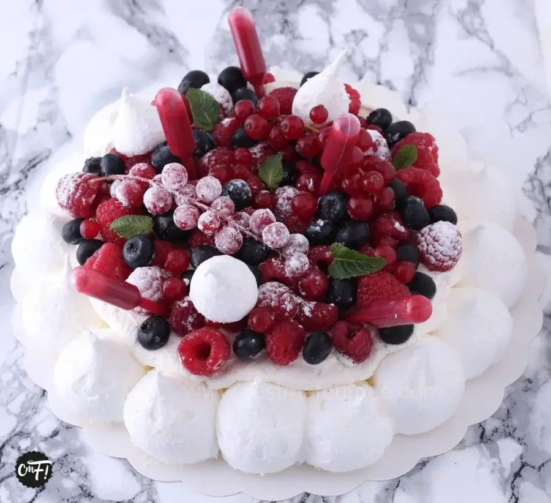

Just as the wedding dress is at the centre of the ceremony, the wedding cake is at the centre of the reception. It is the symbol of your happiness and your wish to share it with your loved ones. It must delight your guests' eyes and their palates. This choice deserves careful thought so that it embodies the essence of your couple.
Tempted by so many sweet treats that it's hard to choose? Don't panic, I'll give you tips and advice for picking the ideal dessert for this unique day.
You dream of a croquembouche worthy of a great romantic film

The croquembouche stands out for its small choux buns filled with crème pâtissière and held together with caramel. It is the must-have of traditional French weddings.
The traditional cone shape represents fertility and prosperity: a pyramid of choux decorated with nougatine, sugar flowers, sugared almonds or ribbons. But you can also imagine a creation in a completely different shape that better suits you as a couple. The size and number of tiers can be adapted to the number of guests, with an average of three to four choux per person.
An experienced pastry chef can bring your boldest ideas to life by sculpting the choux and nougatine as you wish. For inspiration, you can explore various croquembouche ideas on the websites of Bordeaux pastry chefs such as Amand'in Cake.
Amandine
Unique sculptures for a unique couple!
Cake sculpting is used in pâtisserie to create spectacular decorations and tiered cakes. You can also vary the flavours, since there is no specific ingredient for this type of creation. Its flexibility lets you bring your passions, your love story or even your wedding theme to life through a sculpture representing something dear to your story.
You can also combine different elements for a completely unique creation. Travel lovers could combine a world map, a plane and iconic monuments. Foodies might choose sculptures of various desserts, while sports fans could pick motifs linked to their passion. Let your imagination run free for a sculpture that reflects you!

Mixing pleasures with a tiered cake

The tiered wedding cake, originally from the United States, is an essential feature of modern weddings. It is characterised by its multiple layers of genoise or sponge, generously filled with cream and covered in refined icing, finished with sugar decorations.
This dessert comes in a variety of shapes, sizes, colours and flavours, allowing complete personalisation of your creation according to your preferences and the theme of your wedding.
The tiered cake is an original, fully customisable wedding dessert option, adapting to every style and taste preference, which you can explore with this pastry chef.
Meriem
A solution for the indecisive: an assortment of desserts
Not sure which wedding cake to choose to be sure of pleasing all your guests? Don't worry, I have the solution. Opt for an assortment of cakes. You can select several types of desserts in different shapes and flavours, and your guests will find the cake that suits their palate.
All your choices will be presented on an elegantly decorated stand that shows off all your colourful cakes. Your desserts will be a delight for your guests' eyes and palates.
The style of your wedding will also guide your choice: elegant, sophisticated cakes for a classic wedding, or original, modern creations for a contemporary wedding. A country wedding lends itself well to rustic, flavourful cakes.
To choose your assortment of wedding cakes well, there are several criteria to consider.

The number of guests, to work out the quantity needed.
The style of your wedding will also guide your choice: elegant, sophisticated cakes for a classic wedding, or original, modern creations for a contemporary wedding. A country wedding lends itself well to rustic, flavourful cakes.


Don't forget to take your guests' taste preferences into account, varying the flavours to please as many people as possible.
Create a remarkable visual and taste impact by playing with colours, flavours, textures and decorations. Add a personal touch to your dessert buffet with labels, photos, flowers, ribbons or other decorative elements. This original, convivial formula invites your guests to help themselves as they please and savour the desserts standing, sitting or even dancing.

Your pastry chef can help you with the tricky choice of which desserts to pair together.
Nariné
A dessert with a modern touch

The naked cake is a modern version of the traditional American wedding cake.
Imported straight from the United States, it stands out for its rustic, natural look, showcasing its texture and authentic flavours. It is adorned with natural decorations such as fruit, flowers, nuts or branches, in harmony with its flavours for a memorable look and taste. It is a tiered cake made of layers of sponge separated by cream, ganache, jam or fruit, without the usual coating of icing or sugar paste. This design leaves its layers bare, often soaked in aromatic syrups to enhance flavour and softness.
The naked cake adapts to every preference, budget and wedding theme, offering a wide range of possible personalisations. Shapes, sizes, colours and flavours can be mixed to create a unique cake. Decorative elements such as photos, figurines and ribbons can also be added, making the naked cake an original, convivial option for celebrating your wedding.
Your pastry chef can help you with the tricky choice of which desserts to pair together.
Charline
Local Bordeaux wedding cakes
Renowned for its gastronomic and wine heritage, Bordeaux also shines in the art of pâtisserie. The city is home to many talented, innovative pastry chefs, ready to offer you beautiful wedding cakes in many flavours, perfectly in tune with your wishes and your wedding theme. Whether you have a soft spot for canelés, macarons, chocolate, fruit or flowers, you are sure to discover the wedding cake that reflects you among local Bordeaux specialities.
Here are a few inspiring examples of local wedding cakes from Bordeaux. Indulgent, comforting cakes such as Paris-Brest, pavlova, lemon meringue tartlets, moist chocolate cake and more. Classic cakes and homemade creations, such as fraisier, mille-feuille, choco-addict, citrus cake and other delights. Original creations with blended flavours, such as chocolate and mint cake, pistachio and raspberry cake, lemon and verbena cake, and many more.

In short…
Selecting the wedding cake is a crucial, demanding moment that requires both thought and creativity. Whether you choose a traditional croquembouche, an impressive sculpted cake, an elegant tiered cake, a varied assortment of cakes in different flavours, a modern naked cake or a cake typical of your region, it is essential to consider your personal preferences, your budget, your wedding theme and your guests' tastes. Fortunately, the talented pastry chefs of our region are on hand to offer you creations that are both beautiful and delicious, perfectly in tune with your wishes and the specifics of your celebration.
My role as a wedding planner will be to guide you in choosing the dessert that will elevate the end of your meal, visually as much as in taste, and to find you the pastry chef who will create your choice to perfection. Then you can fully enjoy your wedding cake, a symbol of the sweetness and happiness of your union!